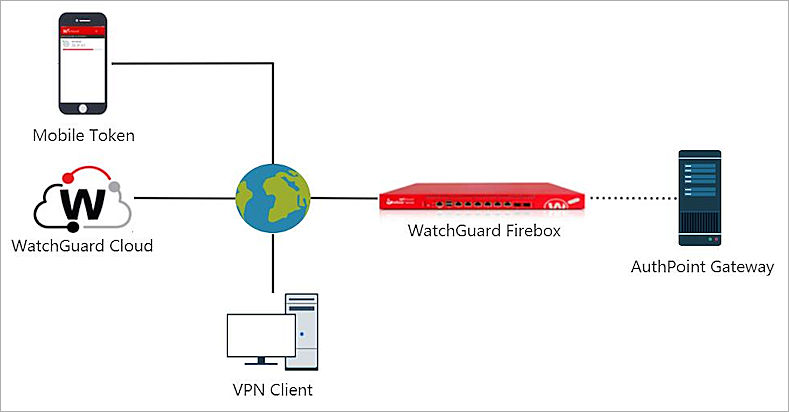

Deployment Overview
This document describes how to set up multi-factor authentication (MFA) for Mobile VPN with SSL with local users, LDAP and Active Directory users, and Azure Active Directory users. Your WatchGuard Firebox must already be configured and deployed before you set up MFA with AuthPoint.
For RADIUS authentication, users can authenticate with a push notification or a one-time password (OTP). You choose which authentication method users can use when you configure the authentication policy in AuthPoint. The steps in this integration guide are for both authentication methods.
If you enable the push and OTP authentication methods for an authentication policy, RADIUS client resources associated with that policy will use push notifications to authenticate users. For Firebox resources, users can choose which authentication method to use.
This integration was tested with Fireware v12.7.2.
Your Firebox must run Fireware v12.7.2 or higher to authenticate Azure Active Directory users with the AuthPoint authentication server on the Firebox.
Integration Summary
The hardware and software used in this guide include:
- Firebox with Fireware v12.7.2 and higher (cloud managed or locally managed)
- Firebox with Fireware v12.7.1 and lower (locally managed)
- AuthPoint Gateway v6.1 or higher
WatchGuard Firebox Authentication Data Flow with AuthPoint
AuthPoint communicates with various cloud-based services and service providers with the RADIUS protocol. This diagram shows the data flow of an MFA transaction for a WatchGuard Firebox.
With Fireware v12.7.2 or higher, the AuthPoint Gateway is only required to sync LDAP users and groups to AuthPoint. The Gateway is not used for user authentication.

Before You Begin
Before you begin these procedures, make sure that:
- A token is assigned to a user in AuthPoint
- If you have Fireware v12.7.1 or lower, we recommend that you have installed and configured the AuthPoint Gateway (see About Gateways)
Configure AuthPoint MFA for Firebox Mobile VPN with SSL
The steps to configure AuthPoint and your Firebox are different based on how you manage your Firebox and the version of Fireware that you have.
The steps to configure AuthPoint and your Firebox are different based on the version of Fireware that you have. Complete the steps in this section to configure AuthPoint MFA for Active Directory and Azure Active Directory users that use Mobile VPN with SSL, with a cloud managed Firebox with Fireware v12.7.2 or higher.
With Fireware v12.7.2 or higher, you can add AuthPoint as an authentication server on your Firebox. For this configuration, you must register and connect your Firebox to WatchGuard Cloud as a cloud-managed Firebox. For detailed instructions on how to register and connect your Firebox to WatchGuard Cloud, go to Add a Cloud-Managed Firebox to WatchGuard Cloud.
To configure AuthPoint MFA for a locally managed Firebox with Fireware v12.7.2 or higher, follow the steps in the Configure AuthPoint MFA for Mobile VPN with SSL with a Locally Managed Firebox(Fireware v12.7.2 or Higher) section.
To configure AuthPoint MFA for a Firebox with Fireware v12.7.2 or higher that is not connected to WatchGuard Cloud, follow the steps in the Configure AuthPoint MFA for Firebox Mobile VPN with SSL (Fireware v12.7.1 and Lower) section.
For this configuration, users must download and use the WatchGuard Mobile VPN with SSL client v12.7 or higher or the OpenVPN SSL client.
Configure AuthPoint
Before AuthPoint can receive authentication requests from the Firebox, you must:
- Add the Firebox as a Firebox resource in AuthPoint.
- Add an authentication policy for the Firebox resource or add the Firebox resource to an existing authentication policy.
- (Optional) Add users and groups.
Configure a Firebox Resource
From the AuthPoint management UI:
- From the navigation menu, select Resources.
- Click Add Resource.
- From the Type drop-down list, select Firebox.
- In the Name text box, type a descriptive name for the resource.
- From the Firebox drop-down list, select the Firebox that you want to connect to AuthPoint. This list only shows Fireboxes and FireClusters that you have added to WatchGuard Cloud, and the device status in WatchGuard Cloud must be Connected.
- Click Save.
After you add the Firebox resource in AuthPoint, the AuthPoint authentication server on your Firebox is enabled. When you configure Mobile VPN with SSL on the Firebox, you must add the AuthPoint authentication server to your Mobile VPN with SSL configuration.
Add a Group in AuthPoint
You must have at least one user group in AuthPoint to configure MFA. If you already have a group, you do not have to add another group.
Your AuthPoint group name must exactly match the group name on the authentication server and the group name you specify on your Firebox in the Configure the Firebox section.
To add a WatchGuard Cloud-hosted group to the WatchGuard Cloud Directory:
- Go to Configure > Directories and Domain Services.
- Click the WatchGuard Cloud Directory domain name. If you have not yet added the WatchGuard Cloud Directory, click Add Authentication Domain and select the WatchGuard Cloud Directory.
The New Group page appears.

- In the Groups tab, click Add Group.
- In the Group Name text box, type a descriptive name for the group.
- (Optional) In the Description text box, type a description of the group.

- Click Save.
Your group is added to the WatchGuard Cloud Directory and to AuthPoint.
Add an Authentication Policy to AuthPoint
Authentication policies specify which resources users can authenticate to and which authentication methods they can use (Push, QR code, and OTP).
You must have at least one authentication policy in AuthPoint that includes the Firebox resource. If you already have authentication policies, you do not have to create a new authentication policy. You can add this resource to your existing authentication policies.
Users that do not have an authentication policy for a specific resource cannot authenticate to log in to that resource.
To configure an authentication policy:
- From the navigation menu, select Authentication Policies.
- Click Add Policy.

- Type a name for this policy.
- From the Select the authentication options drop-down list, select Authentication options and select which authentication options users can choose from when they authenticate.
With Fireware v12.7.2 and higher, if you enable the Push and OTP authentication methods for a policy, users can choose which authentication to use.
QR code authentication is not supported for Firebox resources.

- Select which groups this policy applies to. You can select more than one group. To configure this policy to apply to all groups, select All Groups.
- Select the resource that you created in the Configure a Firebox Resource section. If you want this policy to apply to additional resources, select each resource this policy applies to. To configure this policy to apply to all resources, select All Resources.

-
(Optional) If you have configured policy objects such as a Network Location, select which policy objects apply to this policy. When you add a policy object to a policy, the policy only applies to user authentications that match the conditions of the policy objects. For example, if you add a Network Location to a policy, the policy only applies to user authentications that come from that Network Location. Users who only have a policy that includes a Network Location do not get access to the resource when they authenticate outside of that Network Location (because they do not have a policy that applies, not because authentication is denied).
Policies that have a Network Location apply to Firebox resources.
If you configure policy objects, we recommend that you create a second policy for the same groups and resources without the policy objects. The policy with the policy objects should have a higher priority.

- Click Save.
Your policy is created and added to the end of the policy list.When you create a new policy, we recommend that you review the order of your policies. AuthPoint always adds new policies to the end of the policy list.

Add Users to AuthPoint
Before you assign users to a group, you must add the users to AuthPoint. There are two ways to add AuthPoint user accounts:
- Sync users from an external user database
- Add WatchGuard Cloud-hosted AuthPoint users
Each user must be a member of a group. You must add at least one group before you can add users to AuthPoint.
To import users from Active Directory, Microsoft Entra ID, or an LDAP database, you must add an external identity in the AuthPoint management UI. External identities connect to user databases to get user account information and validate passwords.
- To sync users from Active Directory or an LDAP database, you must add an LDAP external identity
- To sync users from Microsoft Entra ID, you must add a Microsoft Entra ID external identity
When you sync users from an external user database, you can sync any number of users and they are all added to AuthPoint at one time. Users synced from an external user database use the password defined for their user account as their AuthPoint password.
To learn how to sync users, go to Sync Users from Active Directory or LDAP and Sync Users from Azure Active Directory.
You create WatchGuard Cloud-hosted users and groups from the WatchGuard Cloud Directory in WatchGuard Cloud. Directories and Domain Services is where you add shared authentication domains for WatchGuard Cloud devices and services, such as AuthPoint.
Users that you add to the WatchGuard Cloud Directory are automatically added to AuthPoint as well.
You add local AuthPoint users form Directories and Domain Services. You manage the users in AuthPoint on the Users page.
When you add WatchGuard Cloud-hosted AuthPoint users, you choose whether the user is an MFA user or a non-MFA user.
- MFA users are user accounts that will use AuthPoint multi-factor authentication to authenticate. This is not related to the AuthPoint Multi-Factor Authentication license type.
- Non-MFA users are users that will only ever authenticate with a password, such as a service account user. Non-MFA users do not consume an AuthPoint user license and cannot authenticate to resources that require MFA. They can only authenticate to protected resources if the non-MFA user account has a password only authentication policy for that resource.
After you add a user, you can edit the user account if you need to change their account type. When you change a user account from MFA to non-MFA, AuthPoint deletes the tokens and password vault (if applicable) that belong to the user. This action cannot be undone.
Unlike users synced from an external user database, WatchGuard Cloud-hosted AuthPoint users define and manage their own AuthPoint password. When you add a WatchGuard Cloud-hosted user account, the user receives an email that prompts them to set their password.
To learn how to add WatchGuard Cloud-hosted AuthPoint user accounts to the WatchGuard Cloud Directory, go to Add Local Users to an Authentication Domain.
Configure the Firebox
To configure the Firebox, complete these steps:
- Enable Mobile VPN with SSL
- Add Firebox Addresses
- Add Authentication Domains
- Add Users and Groups
- Configure Advanced Settings
- Deploy the Configuration
Enable Mobile VPN with SSL
To enable Mobile VPN with SSL, from WatchGuard Cloud:
- Select Configure > Devices.
- Select your cloud-managed Firebox.
- Click Device Configuration.
- In the VPN section, click the Mobile VPN tile.
The Select VPN page opens.

- Click SSL.
The Mobile VPN with SSL page opens. - Enable Mobile VPN with SSL.

Add Firebox Addresses
To configure Firebox addresses for Mobile VPN, from WatchGuard Cloud:
- In the Mobile VPN with SSL configuration, go to the Firebox Addresses section.
- In the Primary text box, enter the IP address or domain name.
If you enter an IP address, make sure it is one of these:
External IP address
Secondary external IP address
External VLAN
- (Optional) If your Firebox has more than one external address, enter a Backup IP address or domain name.

If you enter a backup IP address or domain name, the VPN client automatically tries to connect to that IP address or domain after a failed connection attempt. To use these backup connection settings, you must also select Auto reconnect after a connection is lost on the Advanced tab.
Add Authentication Domains
Before you can add an authentication domain to the Mobile VPN with SSL configuration, you must first configure one or more user authentication methods. For more information about Mobile VPN authentication, see About Mobile VPN User Authentication.
To use AuthPoint for Mobile VPN user authentication on a cloud-managed Firebox, you must first add the Firebox as an AuthPoint resource, which requires Fireware v12.7.2 or higher.
To add an authentication domain to the Mobile VPN with SSL configuration, from WatchGuard Cloud:
- In the Mobile VPN with SSL configuration, go to the Authentication Domains section.

- Click Add Authentication Domains.
The Add Authentication Domains page opens.

- Select the AuthPoint authentication domain for user authentication.
The authentication domains that you select appear at the end of the Authentication Domains list. - The first server in the list is the default authentication domain. To change the order, click the move handle and drag the domain up or down.
- Click Add.
Add Users and Groups
To add users and groups to the Mobile VPN with SSL configuration, from WatchGuard Cloud:
- In the Mobile VPN with SSL configuration, go to the Users and Groups section.

- To add an authentication domain group, from the Users and Groups section:
- Click Add Groups.
- Select the check box for each group to add.
- To remove a user or group from the mobile VPN configuration, in the row for that user or group, click
 .
.

- Click Add.
The groups that you selected appear in the groups list.
Configure Advanced Settings
On the Advanced tab, you can configure these settings:
To configure the Advanced Settings, from WatchGuard Cloud:
-
In the Networking section, select the method the Firebox uses to send traffic through the VPN tunnel.
Force all client traffic through the tunnel
Select this option to route all traffic from the VPN client to your private network and to the Internet through the tunnel. This option sends all external traffic through the Firebox policies you create and offlers consistent security for mobile users. This option requires more Firebox processing power, which can affect performance. This is the default setting. This option is also known as full tunneling or default route.
Allow access to all Internal and Guest networks
This option routes only traffic to private network resources through the Firebox. Other traffic to the Internet does not go through the tunnel and is not restricted by the policies on your Firebox. This option is also known as split tunneling.
Specify allowed resources
Select this option to restrict Mobile VPN with SSL client access to only specified devices on your private network. This option is also known as split tunneling.
If you select this option, click Add Network, select the network, and click Add.


-
In the Reconnection section, select one or more options.
Auto reconnect after a connection is lost
If you select this option, users can select a check box on the Mobile VPN with SSL client to control whether the client automatically reconnects. This option is selected by default.
Force users to authenticate after a connection is lost
We recommend that you select this option if you use a multi-factor authentication method with a one-time password. After a lost connection, auto reconnect might fail if users do not enter a new one-time password.
Allow the Mobile VPN with SSL client to remember the password
If you select this option, users can select a check box in the Mobile VPN with SSL client to control whether the client remembers the password. This option is selected by default.

-
In the Data Channel section, configure the channel settings.
Data Channel
Mobile VPN with SSL uses the data channel to send data after the VPN connection establishes. The default protocol and port is TCP 443. If you enter a different port, users must manually type the port in the Mobile VPN with SSL connection dialog box (example: 203.0.113.2:444).
If you select TCP, the configuration channel automatically uses the same port and protocol. If you select UDP, you can set the configuration channel protocol to TCP or UDP, and you can use a different port than the data channel.
Configuration Channel
The Configuration Channel determines how users download the Mobile VPN with SSL client software from the Firebox.
The default Configuration Channel is TCP 443. If you keep the default setting, users download the Mobile VPN with SSL client software from
https://[Firebox IP address or FQDN]/sslvpn.html.If you change the default Configuration Channel, users must specify the port number in the URL (https://[Firebox IP address or FQDN]:<444>/sslvpn.html).

-
(Optional) In the Tunnel Security section, select Use Custom Settings. You can configure these options:
Authentication method
Select the authentication method for the connection. Authentication settings specify the authentication algorithm and hash size. You can select SHA2-256 or SHA2-512. The default setting is SHA2-256.
Encryption method
Select an encryption method to encrypt the traffic. Encryption settings specify the encryption algorithm and key length. You can select AES-CBS or AES-GCM algorithms that are 128-, 192-, or 256-bit strength.
We recommend AES-GCM algorithms, which typically provide the best performance for most Firebox models. GCM includes built-in authentication, which means a separate authentication algorithm does not have to be calculated. The default setting is AES-CBC (256-bit).
Keep-Alive Interval
Enter a Keep-Alive Interval value (in seconds). This setting controls how often the Firebox sends traffic through the tunnel to keep the tunnel active when no other tunnel traffic exists. The default value is 10 seconds.
Enter a Keep-Alive Timeout
Enter a Keep-Alive Timeout value (in seconds). This setting controls how long the Firebox waits for a response. If no response arrives before the timeout value, the Firebox closes the tunnel, and the VPN client must reconnect. The default value is 60 seconds.
Renegotiate Data Channel
Enter a Renegotiate Data Channel value (in minutes). If a Mobile VPN with SSL connection has been active for the amount of time specified in the Renegotiate Data Channel text box, the Mobile VPN with SSL client must create a new tunnel. The default value is 480 minutes (8 hours). The minimum value is 60 minutes.

Use Network DNS settings
If you select this option, mobile clients use the internal DNS server that you configured on your cloud-managed Firebox. For information about internal DNS servers, see Configure Firebox DNS Settings.
Assign Network DNS settings
If you select this option, mobile clients use the domain name suffix, DNS servers, and WINS servers that you enter in this section. For example, if you specify example.com as the domain name and 10.0.1.53 as the DNS server, mobile clients use example.com for unqualified domain names and 10.0.1.53 as the DNS server. 
Deploy the Configuration
After you save changes to the Mobile VPN with SSL configuration, deploy the configuration. For more information, see Manage Device Configuration Deployment
Test the Integration
To test the integration of AuthPoint and the WatchGuard Firebox, you authenticate with a mobile token on your mobile device or a hardware token. For RADIUS resources, you can authenticate with a one-time password (OTP) or a push notification. The authentication method you use is determined by the access policy for your RADIUS client resource.
If you authenticate with an OTP, we recommend that you download and use v12.7.0 or higher of the Mobile VPN with SSL client.
If you configure Mobile VPN with SSL to use more than one authentication server, users who do not use the default authentication server must specify the authentication server or domain before the user name. For example, ad1_example.com\j_smith. For more information and examples, see Download, Install, and Connect the Mobile VPN with SSL Client.
To authenticate with push:
- Open your Mobile VPN with SSL client.
- Type your AuthPoint user name and password.

- Type p.
- Click OK.
- Approve the authentication request that is sent to your mobile device.
You are logged in successfully.
To authenticate with an OTP:
- Open your Mobile VPN with SSL client.
- Type your AuthPoint user name and password.
- Type the OTP shown for your token in the AuthPoint mobile app.
- Click OK.
You are logged in successfully.

To apply firewall policies to VLAN traffic between local interfaces, select the Apply firewall policies to intra-VLAN traffic check box in Fireware. Intra-VLAN traffic is traffic from a VLAN that is destined for the same VLAN. When you enable this feature, the Firebox applies policies to traffic that passes through the firewall between hosts that are on the same VLAN. If you want to apply policies to intra-VLAN traffic, make sure that no alternate path exists between the source and destination. The VLAN traffic must go through the Firebox in order for firewall policies to apply, For more information, see Define a New VLAN.
The steps to configure AuthPoint and your Firebox are different based on the version of Fireware that you have. Complete the steps in this section to configure AuthPoint MFA for Active Directory and Azure Active Directory users that use Mobile VPN with SSL, with a locally managed Firebox with Fireware v12.7 or higher.
With Fireware v12.7.2 or higher, you can add AuthPoint as an authentication server on your Firebox. For this configuration, you must register and connect your Firebox to WatchGuard Cloud as a locally-managed Firebox. For detailed instructions to register and connect your Firebox to WatchGuard Cloud, see Add a Locally-Managed Firebox to WatchGuard Cloud.
To configure AuthPoint MFA for a cloud managed Firebox with Fireware v12.7.2 or higher, follow the steps in the Configure AuthPoint MFA for Mobile VPN with SSL with a Cloud Managed Firebox(Fireware v12.7.2 or Higher) section.
To configure AuthPoint MFA for a Firebox with Fireware v12.7.2 or higher that is not connected to WatchGuard Cloud, follow the steps in the Configure AuthPoint MFA for Firebox Mobile VPN with SSL (Fireware v12.7.1 and Lower) section.
For this configuration, users must download and use the WatchGuard Mobile VPN with SSL client v12.7 or higher or the OpenVPN SSL client.
Configure AuthPoint
Before AuthPoint can receive authentication requests from the Firebox, you must:
- Add the Firebox as a Firebox resource in AuthPoint.
- Add an authentication policy for the Firebox resource or add the Firebox resource to an existing authentication policy.
- (Optional) Add users and groups.
Configure a Firebox Resource
From the AuthPoint management UI:
- From the navigation menu, select Resources.
- Click Add Resource.
- From the Type drop-down list, select Firebox.
- In the Name text box, type a descriptive name for the resource.
- From the Firebox drop-down list, select the Firebox that you want to connect to AuthPoint. This list only shows Fireboxes and FireClusters that you have added to WatchGuard Cloud, and the device status in WatchGuard Cloud must be Connected.
- Click Save.
After you add the Firebox resource in AuthPoint, the AuthPoint authentication server on your Firebox is enabled. When you configure Mobile VPN with SSL on the Firebox, you must add the AuthPoint authentication server to your Mobile VPN with SSL configuration.

Add a Group in AuthPoint
You must have at least one user group in AuthPoint to configure MFA. If you already have a group, you do not have to add another group.
Your AuthPoint group name must exactly match the group name on the authentication server and the group name you specify on your Firebox in the Configure the Firebox section.
To add a WatchGuard Cloud-hosted group to the WatchGuard Cloud Directory:
- Go to Configure > Directories and Domain Services.
- Click the WatchGuard Cloud Directory domain name. If you have not yet added the WatchGuard Cloud Directory, click Add Authentication Domain and select the WatchGuard Cloud Directory.
The New Group page appears.
- In the Groups tab, click Add Group.
- In the Group Name text box, type a descriptive name for the group.
- (Optional) In the Description text box, type a description of the group.
- Click Save.
Your group is added to the WatchGuard Cloud Directory and to AuthPoint.
Add an Authentication Policy to AuthPoint
Authentication policies specify which resources users can authenticate to and which authentication methods they can use (Push, QR code, and OTP).
You must have at least one authentication policy in AuthPoint that includes the Firebox resource. If you already have authentication policies, you do not have to create a new authentication policy. You can add this resource to your existing authentication policies.
Users that do not have an authentication policy for a specific resource cannot authenticate to log in to that resource.
To configure an authentication policy:
- From the navigation menu, select Authentication Policies.
- Click Add Policy.
- Type a name for this policy.
- From the Select the authentication options drop-down list, select Authentication options and select which authentication options users can choose from when they authenticate.
With Fireware v12.7.2 and higher, if you enable the Push and OTP authentication methods for a policy, users can choose which authentication to use.
QR code authentication is not supported for Firebox resources.
- Select which groups this policy applies to. You can select more than one group. To configure this policy to apply to all groups, select All Groups.
- Select the resource that you created in the Configure a Firebox Resource section. If you want this policy to apply to additional resources, select each resource this policy applies to. To configure this policy to apply to all resources, select All Resources.
-
(Optional) If you have configured policy objects such as a Network Location, select which policy objects apply to this policy. When you add a policy object to a policy, the policy only applies to user authentications that match the conditions of the policy objects. For example, if you add a Network Location to a policy, the policy only applies to user authentications that come from that Network Location. Users who only have a policy that includes a Network Location do not get access to the resource when they authenticate outside of that Network Location (because they do not have a policy that applies, not because authentication is denied).
Policies that have a Network Location apply to Firebox resources.
If you configure policy objects, we recommend that you create a second policy for the same groups and resources without the policy objects. The policy with the policy objects should have a higher priority.
- Click Save.
Your policy is created and added to the end of the policy list.When you create a new policy, we recommend that you review the order of your policies. AuthPoint always adds new policies to the end of the policy list.
Add Users to AuthPoint
Before you assign users to a group, you must add the users to AuthPoint. There are two ways to add AuthPoint user accounts:
- Sync users from an external user database
- Add WatchGuard Cloud-hosted AuthPoint users
Each user must be a member of a group. You must add at least one group before you can add users to AuthPoint.
To import users from Active Directory, Microsoft Entra ID, or an LDAP database, you must add an external identity in the AuthPoint management UI. External identities connect to user databases to get user account information and validate passwords.
- To sync users from Active Directory or an LDAP database, you must add an LDAP external identity
- To sync users from Microsoft Entra ID, you must add a Microsoft Entra ID external identity
When you sync users from an external user database, you can sync any number of users and they are all added to AuthPoint at one time. Users synced from an external user database use the password defined for their user account as their AuthPoint password.
To learn how to sync users, go to Sync Users from Active Directory or LDAP and Sync Users from Azure Active Directory.
You create WatchGuard Cloud-hosted users and groups from the WatchGuard Cloud Directory in WatchGuard Cloud. Directories and Domain Services is where you add shared authentication domains for WatchGuard Cloud devices and services, such as AuthPoint.
Users that you add to the WatchGuard Cloud Directory are automatically added to AuthPoint as well.
You add local AuthPoint users form Directories and Domain Services. You manage the users in AuthPoint on the Users page.
When you add WatchGuard Cloud-hosted AuthPoint users, you choose whether the user is an MFA user or a non-MFA user.
- MFA users are user accounts that will use AuthPoint multi-factor authentication to authenticate. This is not related to the AuthPoint Multi-Factor Authentication license type.
- Non-MFA users are users that will only ever authenticate with a password, such as a service account user. Non-MFA users do not consume an AuthPoint user license and cannot authenticate to resources that require MFA. They can only authenticate to protected resources if the non-MFA user account has a password only authentication policy for that resource.
After you add a user, you can edit the user account if you need to change their account type. When you change a user account from MFA to non-MFA, AuthPoint deletes the tokens and password vault (if applicable) that belong to the user. This action cannot be undone.
Unlike users synced from an external user database, WatchGuard Cloud-hosted AuthPoint users define and manage their own AuthPoint password. When you add a WatchGuard Cloud-hosted user account, the user receives an email that prompts them to set their password.
To learn how to add WatchGuard Cloud-hosted AuthPoint user accounts to the WatchGuard Cloud Directory, go to Add Local Users to an Authentication Domain.
Configure the Firebox
You must configure Mobile VPN with SSL and add the AuthPoint authentication server to this configuration.
- Select VPN > Mobile VPN.
- In the SSL section, click Manually Configure.
- Select the Activate Mobile VPN with SSL check box.
- In the Primary text box, type the public IP address (external IP address) or domain name of the Firebox. This is the IP address or domain name that Mobile VPN with SSL clients connect to by default.
- Click Save. When you save your changes, a default SSLVPN-Users user group is added.
- Select the Authentication tab.
- From the Authentication Server drop-down list, select the AuthPoint authentication server. Click Add.
- In the Authentication Server list, select your authentication server and click Move Up to move it to the top of the list to make it the default authentication server.
Mobile VPN with SSL uses the default authentication server unless a user specifies an authentication server in the Username text box on the Mobile VPN with SSL client.If you have a Mobile VPN with SSL configured and you only want to test AuthPoint MFA, do not make your authentication server the default.
If you configure Mobile VPN with SSL to use more than one authentication server, users who do not use the default authentication server must specify the authentication server or domain before the user name. For example, ad1_example.com\j_smith.
Do not select the option to Auto reconnect after a connection is lost. This setting does not work with MFA.

- In the Users and Groups section, from the Create new drop-down list, select the AuthPoint authentication server.
- From the adjacent drop-down list, select Group.
- Click Add to add a group to authenticate. AuthPoint is only available after you add it as an authentication server in Step 7.
- For Type, select Group.
The Add User or Group dialog box appears. - In the Name text box, type a name for the group. The name of this group must exactly match the name of the AuthPoint group your users belong to. This is case-sensitive. If you use the default SSLVPN-Users group name, you must add an SSLVPN-Users group to AuthPoint.
If you add a user, the name of the user must exactly match the name of the AuthPoint user or Active Directory user. This is case-sensitive.
- From the Authentication Server drop-down list, select your authentication server.
- Click Save.
- In the Users and Groups list, select the check box for the group(s) you created.
- Click Save.


.png)
Test the Integration
To test the integration of AuthPoint and the WatchGuard Firebox, you authenticate with a mobile token on your mobile device or a hardware token. For RADIUS resources, you can authenticate with a one-time password (OTP) or a push notification. The authentication method you use is determined by the access policy for your RADIUS client resource.
If you authenticate with an OTP, we recommend that you download and use v12.7.0 or higher of the Mobile VPN with SSL client.
If you configure Mobile VPN with SSL to use more than one authentication server, users who do not use the default authentication server must specify the authentication server or domain before the user name. For example, ad1_example.com\j_smith. For more information and examples, see Download, Install, and Connect the Mobile VPN with SSL Client.
To authenticate with push:
- Open your Mobile VPN with SSL client.
- Type your AuthPoint user name and password.
- Type p.
- Click OK.
- Approve the authentication request that is sent to your mobile device.
You are logged in successfully.
To authenticate with an OTP:
- Open your Mobile VPN with SSL client.
- Type your AuthPoint user name and password.
- Type the OTP shown for your token in the AuthPoint mobile app.
- Click OK.
You are logged in successfully.
To apply firewall policies to VLAN traffic between local interfaces, select the Apply firewall policies to intra-VLAN traffic check box in Fireware. Intra-VLAN traffic is traffic from a VLAN that is destined for the same VLAN. When you enable this feature, the Firebox applies policies to traffic that passes through the firewall between hosts that are on the same VLAN. If you want to apply policies to intra-VLAN traffic, make sure that no alternate path exists between the source and destination. The VLAN traffic must go through the Firebox in order for firewall policies to apply, For more information, see Define a New VLAN.
The steps to configure AuthPoint and your Firebox are different based on the version of Fireware that you have. Complete the steps in this section to configure AuthPoint MFA for Active Directory users that use Mobile VPN with SSL with Fireware v12.7.1 and lower.
Configure AuthPoint
Before AuthPoint can receive authentication requests from the Firebox, you must:
- Add a RADIUS client resource in AuthPoint.
- Add an authentication policy for the Firebox RADIUS client resource or add the Firebox RADIUS client resource to an existing authentication policy.
- Bind the Firebox RADIUS client resource to the AuthPoint Gateway.
Add a RADIUS Client Resource in AuthPoint
From the AuthPoint management UI:
- From the navigation menu, select Resources.
Click Add Resource.
The Add Resource page opens.

- From the Type drop-down list, select RADIUS Client.
Additional fields appear.

- In the Name text box, type a descriptive name for the resource.
- In the RADIUS client trusted IP or FQDN text box, type the IP address that your RADIUS client uses to send RADIUS packets to the AuthPoint Gateway. This must be a private IP address. For Fireboxes, this is usually the Trusted IP address of your Firebox.
- From the Value sent for RADIUS attribute 11 drop-down list, specify what is sent for the attribute 11 (Filter-ID) value in RADIUS responses. You can choose to send the user's AuthPoint group or the user's Active Directory groups.
- In the Shared Secret text box, type the shared secret key that you specified in the Configure RADIUS Authentication section. This is the password that the RADIUS server (AuthPoint Gateway) and the RADIUS client (Firebox) will use to communicate.
- Click Save.
Add a Group in AuthPoint
You must have at least one user group in AuthPoint to configure MFA. If you already have a group, you do not have to add another group.
Your AuthPoint group name must exactly match the group name on the authentication server and the group name you specify on your Firebox in the Configure Mobile VPN with SSL section.
To add a WatchGuard Cloud-hosted group to the WatchGuard Cloud Directory:
- Go to Configure > Directories and Domain Services.
- Click the WatchGuard Cloud Directory domain name. If you have not yet added the WatchGuard Cloud Directory, click Add Authentication Domain and select the WatchGuard Cloud Directory.
The New Group page appears.
- In the Groups tab, click Add Group.
- In the Group Name text box, type a descriptive name for the group.
- (Optional) In the Description text box, type a description of the group.
- Click Save.
Your group is added to the WatchGuard Cloud Directory and to AuthPoint.
Add an Authentication Policy to AuthPoint
Authentication policies specify which resources users can authenticate to and which authentication methods they can use (Push, QR code, and OTP).
You must have at least one authentication policy in AuthPoint that includes the RADIUS client resource. If you already have authentication policies, you do not have to create a new authentication policy. You can add this resource to your existing authentication policies.
Users that do not have an authentication policy for a specific resource cannot authenticate to log in to that resource.
To configure an authentication policy:
- From the navigation menu, select Authentication Policies.
The Authentication Policies page opens.
- Click Add Policy.
The Add Policy page opens.
- In the Name text box, type a name for this policy.
- From the Select the Authentication Options drop-down list, select Authentication Options, then select which authentication options users can choose from when they authenticate.
If you enable the push and OTP authentication methods for a policy, RADIUS client resources associated with that policy use push notifications to authenticate users.
QR code authentication is not supported for RADIUS client resources.
- From the Groups drop-down list, select which groups this policy applies to. You can select more than one group. To configure this policy to apply to all groups, select All Groups.
- From the Resources drop-down list, select the resource that you created in the previous section. If you want this policy to apply to additional resources, select each resource this policy applies to. To configure this policy to apply to all resources, select All Resources.
-
(Optional) If you have configured policy objects such as a Network Location, select which policy objects apply to this policy. When you add a policy object to a policy, the policy only applies to user authentications that match the conditions of the policy objects. For example, if you add a Network Location to a policy, the policy only applies to user authentications that come from that Network Location. Users who only have a policy that includes a Network Location do not get access to the resource when they authenticate outside of that Network Location (because they do not have a policy that applies, not because authentication is denied).
For RADIUS authentication, policies that have a Network Location do not apply because AuthPoint does not have the IP address of the user.
If you configure policy objects, we recommend that you create a second policy for the same groups and resources without the policy objects. The policy with the policy objects should have a higher priority.
- Click Save.
Your policy is created and added to the end of the policy list.When you create a new policy, we recommend that you review the order of your policies. AuthPoint always adds new policies to the end of the policy list.
Bind the RADIUS Resource to a Gateway
To use RADIUS authentication with AuthPoint, you must have the AuthPoint Gateway installed on your corporate network and you must assign your RADIUS resources to the Gateway in the AuthPoint management UI. The Gateway functions as a RADIUS server.
If you have not already configured and installed the AuthPoint Gateway, see About Gateways.
To assign your RADIUS resources to the Gateway:
- From the navigation menu, select Gateway.
- Select the Name of the Gateway.
-
From the RADIUS section, in the Port text box, type the port number used to communicate with the Gateway. The default ports are 1812 and 1645.
If you already have a RADIUS server installed that uses port 1812 or 1645, you must use a different port for the AuthPoint Gateway.
- From the Select a RADIUS Resource drop-down list, select your RADIUS client resource.
- Click Save.
Add Users to AuthPoint
Before you assign users to a group, you must add the users to AuthPoint. There are two ways to add AuthPoint user accounts:
- Sync users from an external user database
- Add WatchGuard Cloud-hosted AuthPoint users
Each user must be a member of a group. You must add at least one group before you can add users to AuthPoint.
To import users from Active Directory, Microsoft Entra ID, or an LDAP database, you must add an external identity in the AuthPoint management UI. External identities connect to user databases to get user account information and validate passwords.
- To sync users from Active Directory or an LDAP database, you must add an LDAP external identity
- To sync users from Microsoft Entra ID, you must add a Microsoft Entra ID external identity
When you sync users from an external user database, you can sync any number of users and they are all added to AuthPoint at one time. Users synced from an external user database use the password defined for their user account as their AuthPoint password.
To learn how to sync users, go to Sync Users from Active Directory or LDAP and Sync Users from Azure Active Directory.
You create WatchGuard Cloud-hosted users and groups from the WatchGuard Cloud Directory in WatchGuard Cloud. Directories and Domain Services is where you add shared authentication domains for WatchGuard Cloud devices and services, such as AuthPoint.
Users that you add to the WatchGuard Cloud Directory are automatically added to AuthPoint as well.
You add local AuthPoint users form Directories and Domain Services. You manage the users in AuthPoint on the Users page.
When you add WatchGuard Cloud-hosted AuthPoint users, you choose whether the user is an MFA user or a non-MFA user.
- MFA users are user accounts that will use AuthPoint multi-factor authentication to authenticate. This is not related to the AuthPoint Multi-Factor Authentication license type.
- Non-MFA users are users that will only ever authenticate with a password, such as a service account user. Non-MFA users do not consume an AuthPoint user license and cannot authenticate to resources that require MFA. They can only authenticate to protected resources if the non-MFA user account has a password only authentication policy for that resource.
After you add a user, you can edit the user account if you need to change their account type. When you change a user account from MFA to non-MFA, AuthPoint deletes the tokens and password vault (if applicable) that belong to the user. This action cannot be undone.
Unlike users synced from an external user database, WatchGuard Cloud-hosted AuthPoint users define and manage their own AuthPoint password. When you add a WatchGuard Cloud-hosted user account, the user receives an email that prompts them to set their password.
To learn how to add WatchGuard Cloud-hosted AuthPoint user accounts to the WatchGuard Cloud Directory, go to Add Local Users to an Authentication Domain.
Configure Firebox
You must configure the RADIUS authentication settings and enable Mobile VPN with SSL on your Firebox.
Configure RADIUS Authentication
When a user authenticates with AuthPoint MFA, AuthPoint does not send a response to the Firebox until the user approves the push notification that is sent to them or until the push authentication expires.
When you configure the RADIUS authentication server, the Timeout value must be greater than the push timeout for AuthPoint (60 seconds). With the default settings, if a user does not approve the push notification that is sent to them within 30 seconds, the Firebox will fail over to another server, even though the current server is not down.
- Log in to Fireware Web UI (https://<your firebox IP address>:8080).
- Select Authentication > Servers.
The Authentication Servers page appears. - From the Authentication Servers list, click RADIUS.
The RADIUS page appears. - Click Add.
The Add page appears. - In the Domain Name text box, type the domain name for this RADIUS server. Users must specify this domain name on the user login page. You cannot change the domain name after you save the settings.
- In the Primary Server Settings section, select the Enable RADIUS Server check box.
- In the IP Address text box, type the IP address of the RADIUS server (AuthPoint Gateway).
- In the Port text box, leave the default port setting of 1812. This is the default port used for communication with the RADIUS server (AuthPoint Gateway).
If you already have a RADIUS server installed that uses port 1812, you must use a different port for the AuthPoint Gateway.
- In the Shared Secret and Confirm Secret text boxes, type a shared secret key. This key is used to communicate with the RADIUS server (AuthPoint Gateway).
- In the Timeout text box, type 60.
- Leave the default value for Retries, Dead Time, and Group Attribute.
If you configure a backup RADIUS server, we recommend that you configure the dead time to be 10 minutes for the primary server and 0 minutes for the backup server.
- Click Save.


Configure Mobile VPN with SSL
- Select VPN > Mobile VPN.
- In the SSL section, click Manually Configure.
- Select the Activate Mobile VPN with SSL check box.
- In the Primary text box, type the public IP address (external IP address) or domain name of the Firebox. This is the IP address or domain name that Mobile VPN with SSL clients connect to by default.
- Click Save. When you save your changes, a default SSLVPN-Users user group is added.
- Select the Authentication tab.
- From the Authentication Server drop-down list, select the authentication server you created. Click Add.
- In the Authentication Server list, select your authentication server and click Move Up to move it to the top of the list to make it the default authentication server.
Mobile VPN with SSL uses the default authentication server unless a user specifies an authentication server in the Username text box on the Mobile VPN with SSL client.If you have a Mobile VPN with SSL configured and you only want to test AuthPoint MFA, do not make your authentication server the default.
If you configure Mobile VPN with SSL to use more than one authentication server, users who do not use the default authentication server must specify the authentication server or domain before the user name. For example, ad1_example.com\j_smith.
Do not select the option to Auto reconnect after a connection is lost. This setting does not work with MFA.

- In the Users and Groups section, from the Create new drop-down list, select the authentication server you created.
- From the adjacent drop-down list, select Group.
- Click Add to add a group to authenticate. RADIUS is only available after you add it as an authentication server in Step 7.
- For Type, select Group.
The Add User or Group dialog box appears. - In the Name text box, type a name for the group. The name of this group must exactly match the name of the AuthPoint group your users belong to. This is case-sensitive. If you use the default SSLVPN-Users group name, you must add an SSLVPN-Users group to AuthPoint.
If you add a user, the name of the user must match the name of the AuthPoint user or Active Directory user. This is case-sensitive.
- From the Authentication Server drop-down list, select your authentication server.
- Click Save.
- In the Users and Groups list, select the check box for the group(s) you created.
- Click Save.

Test the Integration
To test the integration of AuthPoint and the WatchGuard Firebox, you authenticate with a mobile token on your mobile device or a hardware token. For RADIUS resources, you can authenticate with a one-time password (OTP) or a push notification. The authentication method you use is determined by the access policy for your RADIUS client resource.
If you configure Mobile VPN with SSL to use more than one authentication server, users who do not use the default authentication server must specify the authentication server or domain before the user name. For example, ad1_example.com\j_smith. For more information and examples, see Download, Install, and Connect the Mobile VPN with SSL Client.
To authenticate with push:
- Open your Mobile VPN with SSL client.
- Type your AuthPoint user name and password.
- Approve the authentication request that is sent to your mobile device.
You are logged in successfully.
To authenticate with an OTP:
- Open your Mobile VPN with SSL client.
- Type your AuthPoint user name and password. Append your OTP to the end of your password. Do not add a space.
You are logged in successfully.
To apply firewall policies to VLAN traffic between local interfaces, select the Apply firewall policies to intra-VLAN traffic check box in Fireware. Intra-VLAN traffic is traffic from a VLAN that is destined for the same VLAN. When you enable this feature, the Firebox applies policies to traffic that passes through the firewall between hosts that are on the same VLAN. If you want to apply policies to intra-VLAN traffic, make sure that no alternate path exists between the source and destination. The VLAN traffic must go through the Firebox in order for firewall policies to apply, For more information, see Define a New VLAN.